Ignition Coil
1949-1977 Kem TV84 Point Set Ford Ranch Wagon Custom Mercury Comet Fairlane NOS
TV84
Fits 1952-1973 Ford Ranch Wagon · 1960-1974 Mercury Comet (2329 listed)
$16.99
View details142 parts from KEM, mostly ignition & tune-up, electrical & sensors and engine parts. Each listing shows the part number, condition and photos. Check fitment on the part page before you order.
142 parts
Online checkout through Square. Ships from Carbondale, PA, or pick up by confirmed appointment only. Fitment question? Message us.
TV84
Fits 1952-1973 Ford Ranch Wagon · 1960-1974 Mercury Comet (2329 listed)
$16.99
View details
U12F
Fits 1950-1974 Ford Country Sedan · 1950-1974 Ford Country Squire (1751 listed)
$24.99
View details
EG1072
Fits 1956 Cadillac DeVille · 1956 Cadillac Eldorado (324 listed)
$14.99
View details
SW86
Fits 1977-1979 Ford F-150 · 1983-1984 Ford Mustang (2011 listed)
$29.99
View details
TV57X
Fits 1967-1974 Chevrolet Camaro · 1964-1975 Chevrolet Chevelle (2389 listed)
$16.99
View details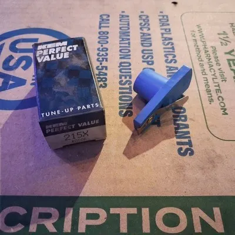
215X
Fits 1957-1976 Ford F-100 · 1957-1970 Ford Fairlane (2077 listed)
$12.99
View details
1825
Fits 1959-1994 Chrysler · 1959-1994 Dodge (3 listed)
$19.99
View details
1925X
Fits 1974-1995 Dodge Ramcharger · 1963-1970 Plymouth Belvedere (1876 listed)
$26.99
View details
1927X
Fits 1966-1976 Dodge Coronet · 1960-1979 Dodge Dart (686 listed)
$26.99
View details
84U
Fits 1963-1974 Chevrolet C10 Pickup · 1964-1973 Chevrolet Chevelle (1719 listed)
$16.99
View details
DS116
Fits 1975-1983 Chevrolet C10 · 1967-1983 Chevrolet C20 Suburban (3000 listed)
$22.99
View details
W8
Fits 1971-1979 Volkswagen Beetle · 1975 Volvo 244 (742 listed)
$21.99
View details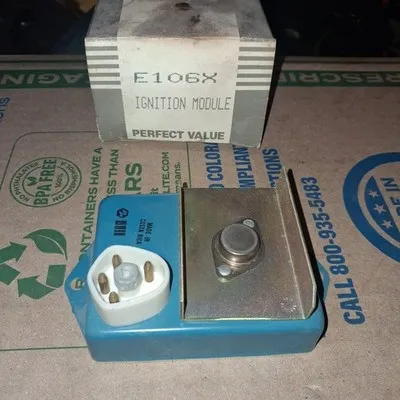
E106X
Fits 1972-1989 Plymouth Gran Fury · 1975-1983 Chrysler Cordoba (3000 listed)
$51.99
View details
FR57
Fits 1976-1980 Chrysler Cordoba · 1972-1975 Chrysler Imperial (2193 listed)
$18.99
View details
W282X
Fits 1986-1989 Honda Accord · 1973-1987 Honda Civic (312 listed)
$12.99
View details
W292X
Fits 1971-1979 Toyota Corolla · 1976-1980 Chevrolet LUV (453 listed)
$13.99
View details
HR45
Fits 1985-1989 Buick Electra · 1986-1990 Buick LeSabre (1866 listed)
$22.99
View details
1281AX
Fits 1976-1987 Chevrolet Chevette · 1975-1977 GMC C25 (1166 listed)
$12.99
View details
W297X
Fits 1980 Dodge Colt · 1987-1989 Chrysler Conquest (229 listed)
$13.99
View details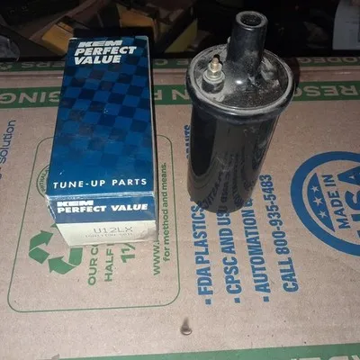
U12LX
Fits 1979-1983 Chrysler Cordoba · 1983-1989 Chrysler Fifth Avenue (273 listed)
$36.99
View details
W393X
Fits 1989-1991 Hyundai Sonata · 1984-1990 Plymouth Colt (115 listed)
$19.99
View details
140-203A
Fits 2000 Buick LeSabre · 1976-1977 Buick Regal (999 listed)
$25.99
View details
AR167
Fits 1979-1995 Buick Century · 1982-1995 Oldsmobile Cutlass Ciera (2677 listed)
$12.99
View details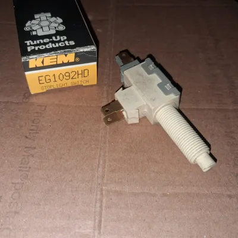
EG1092HD
Fits 1984-1985 Buick Century · 1984-1985 Buick Electra (1904 listed)
$15.99
View details
AR181
Fits 1981-1991 Ford Bronco · 1980-1984 Ford E-150 Econoline (983 listed)
$12.99
View details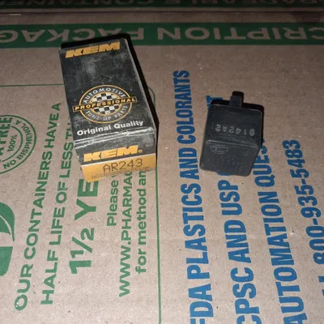
AR243
Fits 1982-2017 Buick Regal · 1980-1995 Cadillac Eldorado (3000 listed)
$12.99
View details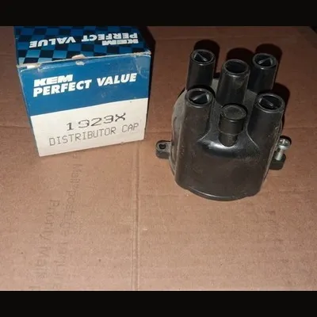
1923X
Fits 1981-1985 Dodge Aries · 1981-1985 Plymouth Reliant (193 listed)
$23.99
View details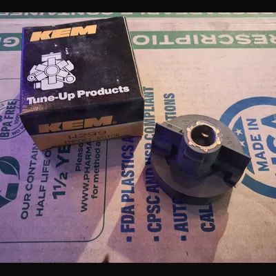
W299
Fits 1984-1986 Nissan 200SX · 1983-1985 Nissan 720 (27 listed)
$13.99
View details
SW95AX
Fits 1985-1990 Dodge D150 · 1985-1990 Dodge D250 (1304 listed)
$24.99
View details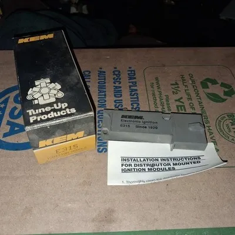
E315
Fits 1982-1986 Ford EXP · 1982-1986 Ford Escort (156 listed)
$32.99
View details
KVR544
Fits 1982-1983 Honda Accord · 1983-1987 Honda Prelude (12 listed)
$55.99
View details
W343
Fits 1984-1988 Nissan 200SX · 1983-1986 Nissan 720 (25 listed)
$23.99
View details
1284X
Fits 1982-1984 Buick Century · 1982-1984 Buick Skylark (702 listed)
$19.99
View details
RF2
Fits 1986-1992 Chevrolet Camaro · 1982-1983 Chevrolet Celebrity (166 listed)
$32.99
View details
254X
Fits 1986 Ford Aerostar · 1984-1985 Ford Bronco II (41 listed)
$24.99
View details
W247
Fits 1983-1986 Nissan Pulsar NX · 1984-1986 Nissan Sentra (32 listed)
$12.99
View details
W3002
Fits 1983-1988 Nissan Pulsar NX · 1983-1988 Nissan Sentra (57 listed)
$14.99
View details
W3011
Fits 1986-1989 Honda Accord · 1989-1990 Honda Prelude (34 listed)
$20.99
View details
257
Fits 1984-1996 Ford Bronco · 1983-1989 Ford E-350 Econoline (808 listed)
$12.99
View details
140-101
Fits 2003-2010 Ford E-150 · 2000-2011 Ford F-150 (1989 listed)
$17.99
View details
269
Fits 1984-1997 Ford F-150 · 1985-1996 Ford Ranger (1848 listed)
$12.99
View details
1285X
Fits 1985-1990 Chevrolet Astro · 1985-1993 Chevrolet S10 (99 listed)
$14.99
View details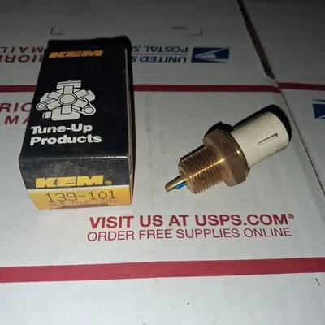
139-101
Fits 1987-1996 Ford E-350 Econoline · 1987-1996 Ford E-350 Econoline Club Wagon (2927 listed)
$17.99
View details
W3022
Fits 1986-1988 Chevrolet Spectrum · 1987-1989 Isuzu I-Mark (7 listed)
$16.99
View details
W3030X
Fits 1986-1989 Mazda 323 · 1988-1990 Mercury Tracer (36 listed)
$16.99
View details
W2012X
Fits 1986-1989 Mazda 323 · 1987-1989 Mercury Tracer (47 listed)
$19.99
View details
W2011
Fits 1989-1992 Ford Probe · 1988-1989 Mazda 323 (98 listed)
$14.99
View details
141-220
Fits 1988-1991 Ford E-250 Econoline Club Wagon · 1988-1997 Ford E-350 Econoline (385 listed)
$39.99
View details
270
Fits 1987-1999 Jeep Cherokee · 1994-1999 Jeep Wrangler (104 listed)
$29.99
View details
W3502W
Fits 1987-1990 Toyota Tercel
$26.99
View details
W2035X
Fits 1987-1991 Dodge Colt · 1989-1990 Dodge 2000 GTX (212 listed)
$12.99
View details
W2083
Fits 1988-1991 Honda CRX · 1988-1991 Honda Civic (62 listed)
$14.99
View details
W3044
Fits 1989-1992 Ford Probe · 1988-1992 Mazda 626 (41 listed)
$14.99
View details
PS185
Fits 1987 Buick Skylark · 1998-1999 Cadillac DeVille (1689 listed)
$24.99
View details
W317
Fits 1995-2002 Volkswagen Cabrio · 1990-1998 Volkswagen Golf (134 listed)
$30.99
View details
W3089X
Fits 1998-2000 Chevrolet Metro · 1989-1997 Geo Metro (53 listed)
$17.99
View details
1289
Fits 1991-1995 Chevrolet Lumina APV · 1991-1994 Oldsmobile Silhouette (27 listed)
$19.99
View details
145-610
Fits 1991-1993 Chrysler Dynasty · 1992-2000 Dodge Grand Caravan (749 listed)
$39.99
View details
W3127
Fits 1993-1995 Toyota 4Runner · 1993-1995 Toyota Pickup (14 listed)
$19.99
View details
350-234
Fits 2006 Cadillac SRX · 2005-2006 Cadillac STS (2678 listed)
$27.99
View details
82U
Fits 1932-1966 Buick · 1932-1966 Chevrolet (4 listed)
$13.99
View details
1701
Fits 1955-1971 Chrysler 300 · 1946-1963 Chrysler New Yorker (3000 listed)
$12.99
View details
216X
Fits 1957-1970 Ford Fairlane · 1957-1974 Ford Ranch Wagon (2996 listed)
$24.99
View details
1932X
Fits 1962-1971 Chrysler 300 · 1983-1989 Chrysler Fifth Avenue (2303 listed)
$26.99
View details
219X
Fits 1966-1974 Ford Bronco · 1965-1976 Ford F-250 (1820 listed)
$12.99
View details
TW42
Fits 1995-1997 Ford Aerostar · 1994-1996 Ford Bronco (1707 listed)
$18.99
View details
W3034
Fits 1973-1974 Honda Civic · 1981-1985 Mazda GLC (230 listed)
$23.99
View details
E303
Fits 1974-1983 Ford F-100 · 1975-1987 Ford F-150 (3000 listed)
$25.99
View details
W286X
Fits 1974-1991 Dodge Colt · 1972-1982 Ford Courier (644 listed)
$31.99
View details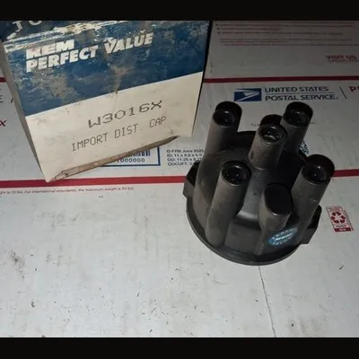
W3016X
Fits 1984-1990 Dodge Colt · 1986-1994 Hyundai Excel (320 listed)
$14.99
View details
TW21
Fits 1993 Asuna GT · 1993 Asuna SE (315 listed)
$22.99
View details
W396X
Fits 1977-1987 Subaru Standard · 1971-1979 Toyota Corolla (161 listed)
$14.99
View details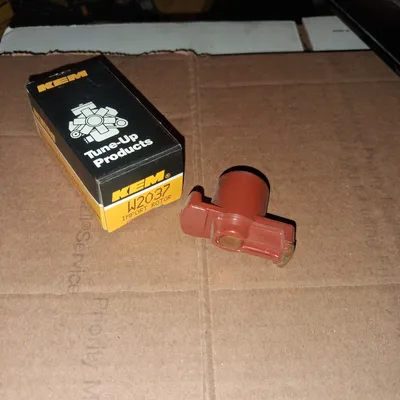
W2037
Fits 1981-1998 Volkswagen Jetta · 1982-1988 Volkswagen Quantum (477 listed)
$12.99
View details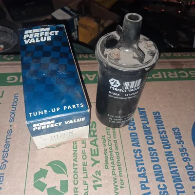
U12GX
Fits 1975-1986 Ford Thunderbird · 1975-1985 Lincoln Continental (570 listed)
$24.99
View details
TW55
Fits 1979-1992 Chevrolet Camaro · 1979-1995 Chevrolet Corvette (1883 listed)
$26.99
View details
DS118
Fits 1978-1985 Buick LeSabre · 1978-1987 Buick Regal (3000 listed)
$27.99
View details
1441X
Fits 1978-1985 Buick Century · 1977-1985 Buick LeSabre (410 listed)
$19.99
View details
229X
Fits 1978-1983 Ford Fairmont · 1979-1986 Ford Mustang (537 listed)
$12.99
View details
TW54
Fits 1978 Buick Century · 1979-1983 Buick Electra (2422 listed)
$17.99
View details
AR174
Fits 1980-1988 Buick Century · 1984-1986 Buick Electra (1481 listed)
$12.99
View details
AR178
Fits 1979-1995 Buick Century · 1984-1989 Buick Electra (2746 listed)
$15.99
View details
W296
Fits 1981-1982 Isuzu I-Mark · 1981-1984 Toyota Celica (179 listed)
$12.99
View details
W298
Fits 1986-1987 Acura Integra · 1981-1989 Honda Accord (144 listed)
$12.99
View details
E220X
Fits 1980-1986 Chevrolet Camaro · 1981-1990 Chevrolet Caprice (1750 listed)
$24.99
View details
1443X
Fits 1982-1984 Chevrolet Camaro · 1982-1984 Pontiac Firebird (569 listed)
$23.99
View details
E224X
Fits 1982-1984 Chevrolet Cavalier · 1982-1986 Oldsmobile Cutlass Ciera (713 listed)
$24.99
View details
E240
Fits 1982-1986 Chevrolet Celebrity · 1982-1993 Chevrolet S10 (1168 listed)
$19.99
View details
TW3
Fits 1986 Dodge Charger · 1982-1989 Dodge Omni (90 listed)
$26.99
View details
TW127
Fits 1993-1994 Chrysler Concorde · 1985-1986 Chrysler Executive Limousine (1541 listed)
$21.99
View details
W3017
Fits 1985-1988 Chevrolet Sprint · 1985-1988 Pontiac Firefly (21 listed)
$15.99
View details
1456X
Fits 1985-1986 Buick Century · 1985-1986 Buick Skylark (94 listed)
$16.99
View details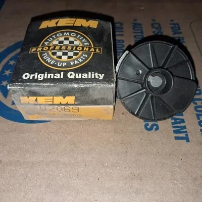
W2069
Fits 1990-1993 Honda Accord · 1985 Honda Civic (39 listed)
$15.99
View details
W2002
Fits 1986-1988 Chevrolet Spectrum · 1985-1989 Isuzu I-Mark (340 listed)
$14.99
View details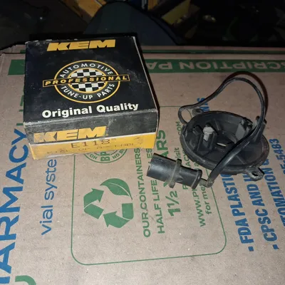
E118
Fits 1988-1992 Chrysler Dynasty · 1986 Chrysler Laser (1024 listed)
$50.99
View details
W2032
Fits 1989-1990 Nissan 240SX · 1990-1994 Nissan D21 (72 listed)
$15.99
View details
E121
Fits 1988-1993 Dodge D150 · 1987-1993 Dodge Dakota (365 listed)
$19.99
View details
W2028
Fits 1988-1989 Ford Festiva · 1991-1993 Mazda B2200 (57 listed)
$25.99
View details
W2092
Fits 1994-1997 Kia Sephia · 1990-1994 Mazda 323 (191 listed)
$14.99
View details
W3045
Fits 1991-1996 Ford Escort · 1990-1993 Ford Festiva (141 listed)
$14.99
View details
1459
Fits 1995-2005 Chevrolet Blazer · 1994-2003 GMC Jimmy (867 listed)
$23.99
View details
138-101
Fits 1985-1995 GMC C1500 · 1985-1996 Buick Century (1885 listed)
$29.99
View details
1426X
Fits 1968-1974 AMC Javelin · 1959-1974 Buick Electra (1158 listed)
$24.99
View details
1449X
Fits 1983-1988 Buick Skyhawk · 1987-1989 Pontiac Grand Am (249 listed)
$19.99
View details
1451X
Fits 1985-1990 Chevrolet Astro · 1985-1986 Chevrolet Camaro (217 listed)
$19.99
View details
1831
Fits 1992-1994 Dodge B150 · 1992-1994 Dodge B250 (681 listed)
$17.99
View details
1935
Fits 1992-2003 Dodge Dakota · 1998-1999 Dodge Durango (252 listed)
$19.99
View details
236X
Fits 1980-1985 Ford Bronco · 1977-1983 Ford F-100 (492 listed)
$19.99
View details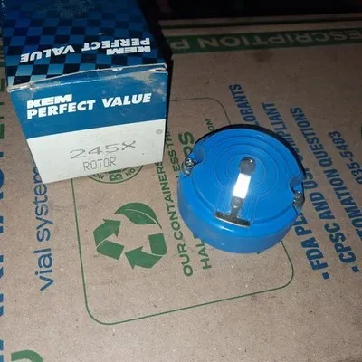
245X
Fits 1984-1985 Ford Bronco II · 1981-1986 Ford Escort (623 listed)
$19.99
View details
247X
Fits 1981-1990 Ford Escort · 1983-1990 Ford Mustang (585 listed)
$19.99
View details
342EX
Fits 1977-1987 Buick Regal · 1974-1990 Cadillac Fleetwood (833 listed)
$29.99
View details
342G
Fits 1985-1986 Buick Century · 1985-1986 Buick Skylark (1941 listed)
$24.99
View details
342H
Fits 1986-1992 Buick LeSabre · 1984-1987 Buick Regal (235 listed)
$69.99
View details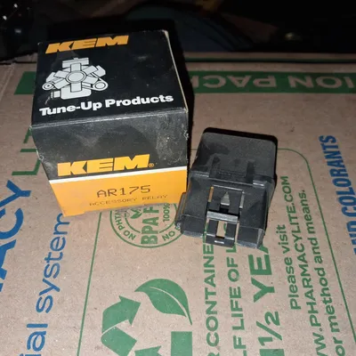
AR175
Fits 1982-1988 Buick Century · 1983-1987 Chevrolet Camaro (596 listed)
$35.99
View details
AR180
Fits 1985-1989 Dodge Aries · 1985-1991 Dodge Caravan (662 listed)
$12.99
View details
AR218
Fits 1986-1991 Chrysler Town & Country · 1987 Dodge Diplomat (124 listed)
$19.99
View details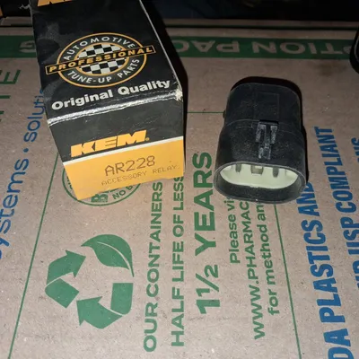
AR228
Fits 1987-1992 Chevrolet Beretta · 1987-1992 Chevrolet Corsica (641 listed)
$17.99
View details
AR251
Fits 1984 Chevrolet Celebrity · 1986-1989 Buick Electra (3000 listed)
$14.99
View details
E223
Fits 1978-1980 Buick LeSabre · 1978-1981 Buick Regal (855 listed)
$27.99
View details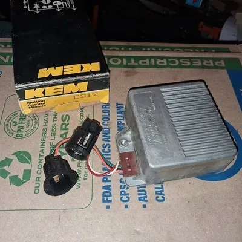
E312
Fits 1981-1987 Ford Bronco · 1981-1987 Ford F-150 (454 listed)
$27.99
View details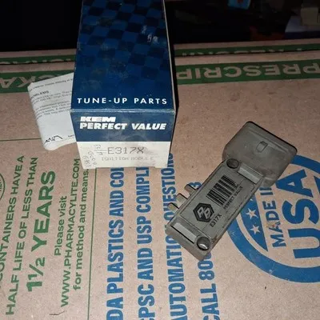
E317X
Fits 1990-1992 Ford Bronco · 1984-1996 Ford F-150 (909 listed)
$39.99
View details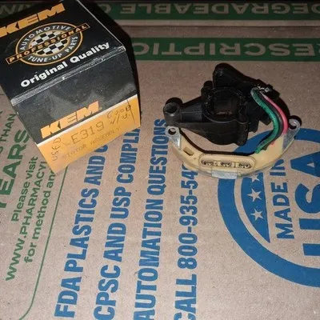
E319
Fits 1983-1992 Ford Bronco · 1983-1990 Ford Escort (2935 listed)
$19.99
View details
E322X
Fits 1987-1988 Ford EXP · 1987-1990 Ford Escort (35 listed)
$49.99
View details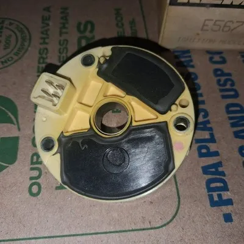
E567
Fits 1987-1995 Dodge Caravan · 1990-1993 Dodge Daytona (207 listed)
$44.99
View details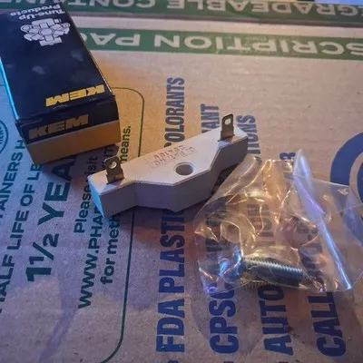
FR56
Fits 1953-1971 Chrysler Imperial · 1953-1971 Chrysler New Yorker (246 listed)
$27.99
View details
HR41
Fits 1975-1993 Jeep Cherokee · 1973-1994 Chevrolet Blazer (2456 listed)
$24.99
View details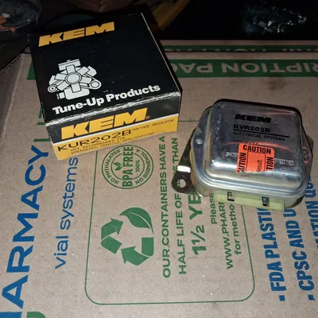
KVR202B
Fits 1966-1989 Ford Bronco · 1975-1992 Ford F-150 (2855 listed)
$29.99
View details
KVR202BX
Fits 1965-1983 Ford F-100 · 1966-1989 Ford Bronco (3000 listed)
$34.99
View details
PS4
Fits 1973-1975 Buick Apollo · 1973 Buick Centurion (2071 listed)
$19.99
View details
PS90
Fits 1966-1988 Ford Bronco · 1960-1989 Ford F-250 (1356 listed)
$34.99
View details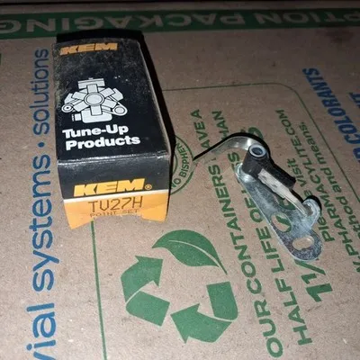
TV27H
Fits 1950-1962 Chevrolet Bel Air · 1960-1962 AMC American (842 listed)
$19.99
View details
TW43
Fits 1980-1982 AMC Concord (28 listed)
$14.99
View details
U12A
Fits 1955-1974 Chevrolet Bel Air · 1958-1972 Chevrolet Biscayne (2949 listed)
$20.99
View details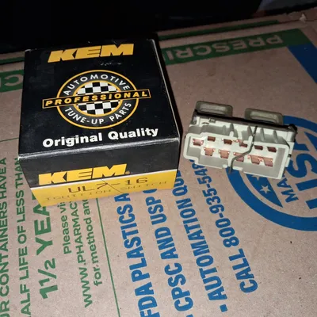
UL7-16
Fits 1987-1991 Ford Bronco · 1987-1991 Ford F-150 (451 listed)
$29.99
View details
W2030
Fits 1990 Mazda B2600 (5 listed)
$19.99
View details
W2031
Fits 1989-1990 Nissan 240SX · 1990-1994 Nissan D21 (17 listed)
$19.99
View details
W2054X
Fits 1989-1992 Chevrolet Sprint (22 listed)
$12.99
View details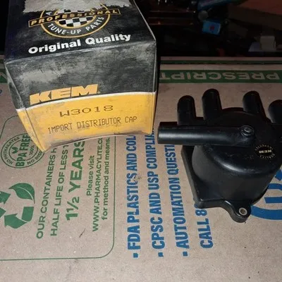
W3018
Fits 1986-1989 Honda Accord · 1984-1987 Honda Prelude (39 listed)
$16.99
View details
W3038
Fits 1990-1991 Acura Integra · 1988-1991 Honda CRX (25 listed)
$16.99
View details
W3058
Fits 1989-1990 Nissan 240SX · 1990-1994 Nissan D21 (40 listed)
$26.99
View details
W363
Fits 1985-1988 Chevrolet Nova · 1985-1988 Toyota Corolla (72 listed)
$21.99
View details
W377X
Fits 1984-1987 Mazda 626 · 1987-1989 Chrysler Conquest (282 listed)
$14.99
View details
W399X
Fits 1981-1983 Toyota Celica · 1981-1982 Toyota Corona (37 listed)
$15.99
View details